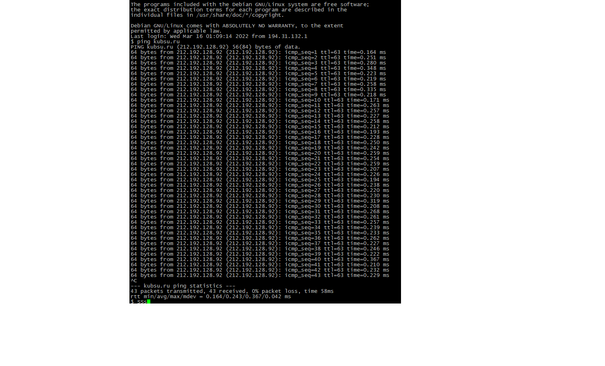

perviy
PuTTY представляет собой приложение,которое является клиентом для различных протоколов ,включая SSH ,TELNET,rlogin. С помомщью него мы подключаемся к учебному серверу по SSH
vtoroy
Вход на сервер
tretiy
команда ping позволяет узнать пинг(задержка) до хоста

4
-nslookup позволяет узнать о днс и ип блаблабша

5
whois дает информациюблаблабла

6
whois creatde p